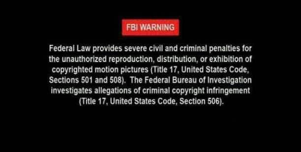

Conversation with 81184027 at Sun 24 Aug 2014 01:35:12 PM CST on 154115835 (webqq)
(08/24/2014 12:28:50 PM) 箭客: 留守妇女是狗教最喜欢的群体
(08/24/2014 12:29:10 PM) 福建-福州&水浒: 老岳母信了近一年
(08/24/2014 12:29:24 PM) 福建-福州&水浒: 所以要多关心他们
(08/24/2014 12:30:24 PM) 福建-福州&水浒: 至于留守妇女的问题，扩大话来说也是现实制度的造成的
(08/24/2014 12:31:12 PM) 福建-福州&水浒: 关于全能组织方方面面都于制度性有联系，你慢慢去了解就明白了
(08/24/2014 12:31:13 PM) 箭客: 是的
(08/24/2014 12:31:32 PM) 箭客: 反应我们这个地方问题挺多
(08/24/2014 12:33:05 PM) 福建-福州&水浒: 你也可以参考法律涉及宗教的方面的不足，了解越多失望越大，连中共政府也希望受害家属有办法尽量采用家属自救方法，
(08/24/2014 12:34:45 PM) 箭客: 这是肯定的，也是有道理的
(08/24/2014 12:35:01 PM) 箭客: 国家也不是万能的
(08/24/2014 12:35:22 PM) 箭客: 又不是狗教，全能:D
(08/24/2014 12:35:57 PM) 福建-福州&水浒: 家庭的的组成，先有家才有国
(08/24/2014 12:36:25 PM) 箭客: 哎
(08/24/2014 12:36:33 PM) 箭客: 无奈
(08/24/2014 12:36:38 PM) 箭客: 无力
(08/24/2014 12:38:39 PM) 福建-福州&水浒: 除了等待其被警察异地抓捕，你先做好准备，当然主动点去寻找更好
(01:35:52 PM) lost message from #206836 to #206836
(01:22:21 PM) 蛋包飯: 不景気
(01:28:25 PM) 箭客: 异地抓捕，会通知家属吗
(01:30:23 PM) 福建-福州&水浒: 你在公安部门备案过的话，会的通知户籍所在地
(08/24/2014 01:12:31 PM) 2878908108: (#206836)杨青甫年龄65岁有点痴呆，于8月5日上午在河南洛阳市七一路附近走丢，身穿橘黄色上衣，白色衣领，下身黑色短裤，拖鞋，如有人看到请联系杨先生电话，13849927138或15517968607.家人重谢，大家看到相互转发谢谢，.
(08/23/2014 11:27:37 PM) 欧阳春: 光，明天去上海
(08/23/2014 11:29:38 PM) 紫罗兰: 呵呵
(08/23/2014 11:29:52 PM) 紫罗兰: 你是要光先生请客么？
(08/23/2014 11:30:29 PM) 欧阳春: 请客的问题不在讨论范伟
(08/23/2014 11:31:45 PM) 欧阳春: 听听他的理解
(08/23/2014 11:45:44 PM) 紫罗兰: 嗯嗯
(08/23/2014 11:46:23 PM) 紫罗兰: 我觉得就这样聊比较好
(08/23/2014 11:47:21 PM) 797529572:
(08/23/2014 11:51:30 PM) 福建-福州&水浒: 什么情况
(08/24/2014 09:25:02 AM) 光: 嗯
(08/24/2014 09:30:42 AM) 福建-福州&水浒: 光先生，早:coffee:
(08/24/2014 09:36:55 AM) 光: :face14:早
(08/24/2014 10:15:05 AM) 憧憬￠未来: 各位早
(08/24/2014 10:12:00 AM) 光: :face14:早
(08/24/2014 10:12:56 AM) 光: “
求木之长者，必固其根本；欲流之远者，必浚其泉源。
”
(08/24/2014 10:13:31 AM) 光: 中国特色社会主义是植根于中国大地、反映中国人民意愿、适应中国和时代发
展进步要求的科学社会主义。如果说社会主义历经高潮与低潮、成功与挫折的历程，
是一部气势恢宏、跌宕起伏的交响乐，那么中国特色社会主义就是这部雄浑交响乐
的华彩乐章。
习近平总书记在新进中央委员会的委员、候补委员学习贯彻党的十八大精神研
讨班上的讲话中指出：
“
我们党始终强调，中国特色社会主义，既坚持了科学社会主
义基本原则，又根据时代条件赋予其鲜明的中国特色。这就是说，中国特色社会主
义是社会主义，不是别的什么主义。
”
一个
国家实行什么样的主义，关键要看这个主
义能否解决这个国家面临的历史性课题。在中华民族积贫积弱、任人宰割的时期，
各种主义和思潮都进行过尝试，资本主义道路没有走通，改良主义、自由主义、社
会达尔文主义、无政府主义、实用主义、民粹主义、工团主义等也都
“
你方唱罢我登
场
”
，但都没能解决中国的前途和命运问题。是马克思列宁主义、毛泽东思想引导中
国人民走出了漫漫长夜、建立了新中国，是中国特色社会主义使中国快速发展起来
了。
实践是最硬的标准，道路走得怎么样，最终要靠事实来说话。新中国成立六十
多年特别是改革开放三十多年来，我
国经济实力、综合国力大幅提升，人民生活显
著改善，国际地位空前提升。一九七九到二〇一二年，国内生产总值年均增长百分
之九点八，远高于同期世界经济年均百分之二点八的增速，经济总量跃居世界第二，
成功实现从低收入国家向中等偏上收入国家的跨越。这样的发展、这样的巨变，在
人类发展史上都是罕见的。习近平总书记指出：
“
今天之中国，同新中国成立以前之
中国相比，同鸦片战争以后之中国相比，有天壤之别啊！
”
同欧美一些国家受困于金
融危机、债务危机相比，同一些发展中国家陷入发展陷阱相比，同西亚北非一些国
家政治动荡、社会混乱相比，我国发展
可以说是风景这边独好。事实雄辩地证明：
中国特色社会主义这条路，走得对、走得好。
近些年来，国内外有些舆论提出中国现在搞的究竟还是不是社会主义的疑问，
有人说是
“
资本社会主义
”
，还有人干脆说是
“
国家资本主义
”
、
“
新官僚资本主义
”
。这
些都是完全错误的。我们说中国特色社会主义是社会主义，那就是不论怎么改革、
怎么开放，我们都始终坚持了中国特色社会主义道路、中国特色社会主义理论体系、
6
中国特色社会主义制度，坚持了党的十八大提出的夺取中国特色社会主义新胜利的
基本要求。这就包括在中国共产党领导下，立足基本国情，以经济建设
为中心，坚
持四项基本原则，坚持改革开放，解放和发展社会生产力，建设社会主义市场经济、
社会主义民主政治、社会主义先进文化、社会主义和谐社会、社会主义生态文明，
促进人的全面发展，逐步实现全体人民共同富裕，建设富强民主文明和谐的社会主
义现代化国家；包括坚持人民代表大会制度的根本政治制度，中国共产党领导的多
党合作和政治协商制度、民族区域自治制度以及基层群众自治制度等基本政治制度，
中国特色社会主义法律体系，公有制为主体、多种所有制经济共同发展的基本经济
制度。习近平总书记指出：
“
这些都是在新的历史条件下体现科学社会主义
基本原则
的内容，如果丢掉了这些，那就不成其为社会主义了。
”
“
求木之长者，必固其根本；欲流之远者，必浚其泉源。
”
找到一条好的道路不
容易，走好这条道路更不容易。过去，我们照搬过本本，也模仿过别人，有过迷茫，
也有过挫折，一次次碰壁、一次次觉醒，一次次实践、一次次突破，最终走出了一
条中国特色社会主义成功之路。现在，有些人议论这个道路、那个道路，有的想拉
回到老路上，有的想引到邪路上去；有的是思想认识误区，有的是别有用心。中国
特色社会主义这条道路，我们看准了、认定了，必须坚定不移走下去。要虚心学习
借鉴人类社会创造
的一切文明成果，但不能数典忘祖，不能照抄照搬别国的发展模
式。要始终保持清醒坚定，保持强大前进定力，既不走封闭僵化的老路，也不走改
旗易帜的邪路，不为任何风险所惧，不为任何干扰所惑，真正做到
“
千磨万击还坚劲，
任尔东西南北风
”
。
(08/24/2014 10:14:38 AM) 光: https://attachments.tower.im/tower/96459aa03b61431ba5a3ac03e76b5da5?filename=%E4%B9%A0%E8%BF%91%E5%B9%B3%E6%80%BB%E4%B9%A6%E8%AE%B0%E7%B3%BB%E5%88%97%E9%87%8D%E8%A6%81%E8%AE%B2%E8%AF%9D%E8%AF%BB%E6%9C%AC.pdf
(08/24/2014 10:14:58 AM) 光: 习近平总书记系列重要讲话读本.pdf
(08/24/2014 10:16:18 AM) 光: 二是必须顺应世界大势。
“
世界潮流，浩浩荡荡，顺之则昌，逆之则亡。
”
正确
处理中国和世界的关系，是事关党的事业成败的重大问题。中国共产党的诞生，社
会主义中国的成立，改革开放的实行，都是顺应世界发展大势的结果。改革开放是
怎么搞起来的？很关键的一条是我们党正确判断世界大势，确立了和平与发展是时
代主题的认识，才有了党和国家工作中心的转移，才有了改革开放历
史新时期的开
启。在当今世界深刻复杂变化、中国同世界的联系和互动空前紧密的情况下，更要
密切关注国际形势发展变化，把握世界大势，统筹好国内国际两个大局，在时代前
进潮流中把握主动、赢得发展。
(08/24/2014 10:17:39 AM) 光: 中国梦的本质是国家富强、民族振兴、人民幸福
中国梦视野宽广、内涵丰富、意蕴深远。习近平总书记指出，
“
中国梦的本质是
国家富强、民族振兴、人民幸福
”
。这个梦想，把国家的追求、民族的向往、人民的
期盼融为一体，体现了中华民族和中国人民的整体利益，表达了每一个中华儿女的
共同愿景。正因为如此，它具有了广泛的包容性，成为回荡在十三亿人心中的高昂
旋律。
中
国梦是国家情怀、民族情怀、人民情怀相统一的梦。
“
家是最小国，国是千万
家。
”
国泰则民安，民富则国强。中国梦的最大特点，就是把国家、民族和个人作为
一个命运共同体，把国家利益、民族利益和每个人的具体利益紧紧联系在一起，体
现了中华民族固有的
“
家国天下
”
的情怀。实现中国梦，意味着中国的经济实力和综
合国力、国际地位和国际影响力大大提升，意味着中华民族以更加昂扬向上、文明
开放的姿态屹立于世界民族之林，意味着中国人民过上更加幸福富裕安康的生活。
中国梦归根到底是人民的梦。人民是中国梦的主体，是中国梦的创造者和享有
者。中
国梦必须紧紧依靠人民来实现，必须不断为人民造福。我们的人民是伟大的
人民，中国人民素来有着深沉厚重的精神追求，即使近代以来饱尝屈辱和磨难，也
没有自弃沉沦，而是始终怀揣梦想，向往光明的未来。实现中华民族伟大复兴，不
是哪一个人、哪一部分人的梦想，而是全体中国人民共同的追求；中国梦的实现，
不是成就哪一个人、哪一部分人，而将造福全体人民。因此，中国梦的深厚源泉在
于人民，中国梦的根本归宿也在于人民。
中国梦是国家的梦、民族的梦，也是每一个中国人的梦。
“
得其大者可以兼其
小。
”“
宏大叙事
”
的国家梦，也是
“
具体而微
”
的个
人梦。历史告诉我们，每个人的前
途命运都与国家和民族的前途命运紧密相连。国家好，民族好，大家才会好。当今
11
时代是放飞梦想的时代，每个人都有自己的美好梦想。从上学就业到住房就医，尊
严的保证、事业的成功、价值的实现
......
十三亿个鲜活生动的个人梦想百川归海汇成
中国梦。中国梦的广阔舞台，为个人梦想提供了蓬勃生长的空间；每个人向着梦想
的不断努力，又都是实现伟大中国梦的重要力量。只要每个人都把人生理想融入国
家和民族的伟大梦想之中，敢于有梦、勇于追梦、勤于圆梦，就会汇聚成实现中国
梦的强大力量。
(08/24/2014 10:18:02 AM) 光: 这边中国梦，那边富人集体移民
(08/24/2014 10:20:26 AM) 光: 铸牢听党指挥这个强军之魂
49
人民军队之所以有力量，根本就在于有凝聚军心意志的神圣军魂。我军是党缔
造的，一诞生便与党紧紧地联系在一起，始终在党的绝对领导下行动和战斗。我们
党是马克思主义政党，是全心全意为人民服务的政党，只有坚持党对军队的绝对领
导，才能从根本上保证人民军队的性质。八十多年来，我军之所以能始终保持强大
的凝聚力、向心力、战斗力，经受住各种考验，不断从胜利走向胜利，最根本的就
是靠党的坚强领导。这是我军的军魂和命根子，永远不能变，永远不能丢。二〇一
二年十一月，习近平总书记在中央军委扩大会议上强调，
“
保证党对军队的绝对领
导，关系我军性质和宗旨、关系社会主义前途命运、关系党和国家长治久安
”
。这
个最根本的问题守不住，军队就会变质，就不可能有战斗力！任何时候任何情况下，
都必须铸牢听党指挥这个强军之魂，坚持党对军队绝对领导的根本原则和人民军队
的根本宗旨不动摇。
要不要坚持党对军队的绝对领导，始终是我们同各种敌对势力斗争的一个焦点。
当前，意识形态领域斗争异常激烈。我军是党的军队、人民的军队、社会主义国家
的军队，这是高度一致的。敌对势力极力鼓吹
“
军队非党化、非政治化
”
和
“
军队
国家化
”
，打着所谓
“
民主政治
”
、
“
公器公用
”
的幌子攻击我们，就是妄图动摇
党对军队的绝对领导。历史和现实都告诉我们，在这个根本政治原则问题上，我们
要头脑特别清醒、态度特别鲜明、行动特别坚决，决不能有任何动摇、任何迟疑、
任何含糊。
在我军官兵成分结构发生很大变化的今天，一些年轻同志缺乏对马克思主义理
论的系统学习，缺乏对党的优良传统的深入了解，缺乏艰苦环境和复杂斗争的锻炼，
对于党指挥枪的极端重要性往往认识不足、认识不透。社会上形形色色的思想观念
包括一些极端错误的观点，会通过各种渠道传播到部队中来，总会在官兵中有所反
映。在坚持党对军队绝对领导这
个问题上，我们要坚定不移，时时刻刻做工作，经
年累月抓落实。
坚持党对军队的绝对领导，必须落实在行动上，以行动来检验。坚持党对军队
的绝对领导，最紧要的是始终在思想上政治上行动上同党中央保持高度一致，坚决
维护党中央、中央军委的权威，一切行动听从党中央、中央军委指挥。这一条要作
为最高的政治要求来遵守，作为最高的政治纪律来维护。坚持党对军队的绝对领导，
要靠一套制度作保证。党对军队实施绝对领导有一系列根本原则和制度，无论战争
形态怎么演变、军队建设内外环境怎么变化、军队组织形态怎么调整，都必须始终
不渝坚持。要坚持把
从思想上政治上建设和掌握部队摆在突出位置，坚持不懈用中
国特色社会主义理论体系武装官兵，持续培育当代革命军人核心价值观，大力发展
先进军事文化，有的放矢加强意识形态工作，组织官兵认真学习国史党史军史，着
力增强思想政治教育的时代性和感召力，坚定党对军队绝对领导的政治自信和政治
自觉，打牢官兵高举旗帜、听党指挥的思想政治基础。要全面加强军队党的建设，
保持党员队伍的先进性和纯洁性，把各级党组织建设成为坚强领导核心和战斗堡垒。
要端正选人用人导向，坚持从政治上考察和使用干部，确保枪杆子永远掌握在忠于
党的可靠的人手中。
(08/24/2014 10:21:29 AM) 光: 确保枪杆子永远掌握在忠于
党的可靠的人手中。
(08/24/2014 10:22:21 AM) 光: 现在，社会环境变化了，社会上一些不良风气在部队都会有所表现，一些病菌
也在不断侵蚀部队的肌体。有病就要治，而且大病小病都要治
，要及时治。如果讳
疾忌医，小病拖成了大病，宿疾难医，军队就不成其为军队，更谈不上能打胜仗了！
“
木之折也必通蠹，墙之坏也必通隙。
”
如果我们不能及时解决自身存在的问题，
任其发展下去，就会自毁长城。二〇一三年八月，习近平总书记在视察沈阳战区部
队时强调，要坚持按照标准更高、走在前列的要求不断把部队作风建设引向深入，
努力实现作风建设根本性好转
(08/24/2014 10:22:56 AM) 光: 当前，我们正在进行具有许多新的历史特点的伟大斗争，党肩负着历史重任，
经受着时代考验。与国内外形势发展变化相比，与党所承担的历史任务相比，党的
领导水平和执政水平、党组织建设状况和党员干部素质、能力、作风，都还有不小
差距。一些干部得过且过，一些基层组织软弱涣散，不能发挥模范带头作用和战斗
堡垒作用。一些党员干部作风问题比较突出，有的严重脱离群众，对群众疾苦漠然
置之，甚至欺压群众、侵害群众利益；形式主义、官僚主义问题较为普遍地存在，
奢侈浪费现象严重。一些领域消极腐败现象易发多发，不仅大案要案时有发生、令
人触目惊心，
而且发生在群众身边的腐败现象较多存在。这些问题必须引起我们高
度警觉。
党领导人民已经取得举世瞩目的成就，我们完全有理由因此而自豪，但我们自
豪而不能自满，决不能躺在过去的功劳簿上。只有坚持党要管党、从严治党，以改
革创新精神推进党的建设，才能更好经受住执政考验、改革开放考验、市场经济考
验、外部环境考验，更好战胜精神懈怠危险、能力不足危险、脱离群众危险、消极
腐败危险。二〇一三年七月，习近平总书记来到革命圣地西柏坡，谆谆告诫全党，
“
党面临的
‘
赶考
’
远未结束
”
，
“
所有领导干部和全体党员要继续把人民对我们
党的
‘
考试
’
、把我们党正在经受和将要经受各种考验的
‘
考试
’
考好，努力交出
优异的答卷
”
。这体现了强烈的忧患意识，体现了把党建设好，确保党永远不变质、
红色江山永远不变色的坚定决心。
“
打铁还需自身硬。
”“
中华号
”
巨轮乘风破浪、顺利前行，关键靠党来掌舵，
靠党来掌握方向。要坚持治国必先治党、治党务必从严，提高管党治党的能力和水
平，靠
“
自身硬
”
凝聚起不可战胜的磅礴力量，创造无愧于历史的辉煌业绩。
(08/24/2014 10:23:49 AM) 光: 应该充分肯定，当前我们大多数党员、干部理想信念是坚定的，政治上是可靠
的。同时，也要看到，在党员、干部队伍中，信仰缺失是一个需要引起高度重视的
问题。有的对共产主义心存怀疑，认为那是虚无缥缈、难以企及的幻想；有的不信
马列信鬼神，从封建迷信中寻找精神寄托，热衷于算命看相、烧香拜佛，遇事
“
问
计于神
”
；有的是非观念淡薄、原则性不强、正义感退化，糊里糊涂当
官，浑浑噩
噩过日子；有的甚至向往西方社会制度和价值观念，对社会主义前途命运丧失信心；
有的在涉及党的领导和中国特色社会主义道路等原则性问题的政治挑衅面前态度暧
昧、消极躲避、不敢亮剑，甚至故意模糊立场、耍滑头；等等。事实一再表明，理
想信念动摇是最危险的动摇，理想信念滑坡是最危险的滑坡。一些党员、干部出这
样那样的问题，说到底是信仰迷茫、精神迷失。
崇高信仰、坚定信念不会自发产生。习近平总书记指出：
“
要炼就
‘
金刚不坏
之身
’
，必须用科学理论武装头脑，不断培植我们的精神家园。
”
党的领导干部特
别是高级干部，要把系统掌
握马克思主义基本理论作为看家本领。广大党员干部要
老老实实、原原本本学习马克思列宁主义、毛泽东思想特别是邓小平理论、
“
三个
代表
”
重要思想、科学发展观，把理想信念建立在对科学理论的理性认同上，建立
在对历史规律的正确认识上，建立在对基本国情的准确把握上。通过坚持不懈学习，
学会运用马克思主义立场、观点、方法观察和解决问题，不断筑牢理想信念，做到
虔诚而执着、至信而深厚。
(08/24/2014 10:24:52 AM) 光: 怎样把好干部用起来？用一贤人则群贤毕至，见贤思齐就蔚然成风。选什么人
就是风向标，就有什么样的干部作风，乃至就有什么样的党风。用人得当，首先要
知人。要近
距离接触干部，观察干部对重大问题的思考、对群众的感情、对待名利
的态度、处理复杂问题的过程和结果。用人得当，就要坚持全面、历史、辩证看干
部，注重一贯表现和全部工作，改进考核方法手段。用人得当，就要科学合理使用
干部，用当其时、用其所长，树立强烈的人才意识，寻觅人才求贤若渴，发现人才
如获至宝，举荐人才不拘一格，使用人才各尽其能。要下决心改变任人唯亲、任人
唯利的问题，使用人之风真正纯洁起来。
(08/24/2014 10:24:57 AM) 光: 这个对的
(08/24/2014 10:25:32 AM) 光: 坚持以零容忍态度惩治腐败
腐败是社会毒瘤，是影响经济社会发展、国家长治久安的致命风险。反对腐败、
建设廉洁政治，保持党的肌体健康，始终是我们党一贯坚持的鲜明政治立场。反腐
倡廉建设，是广大干部群众始终关注的重大政治问题。党的十八大以来，我们党以
坚决的态度重拳反腐，坚持
“
老虎
”
、
“
苍蝇
”
一起打，二十多名省部级高官相继
落马，湖南
衡阳破坏选举案被严肃查处，让全党全国全社会感到了变化、看到了希
望，树立了党的权威、赢得了群众信任。
反腐倡廉必须常抓不懈，拒腐防变必须警钟长鸣。当前，滋生腐败的土壤依然
存在，反腐败形势依然严峻复杂，一些不正之风和腐败问题影响恶劣，亟待解决。
“
物必先腐，而后虫生。
”
如果任凭腐败问题愈演愈烈，最终必然会亡党亡国。二
〇一四年一月，习近平总书记在十八届中央纪委第三次全体会议上强调，要
“
以猛
药去疴、重典治乱的决心，以刮骨疗毒、壮士断腕的勇气，坚决把党风廉政建设和
反腐败斗争进行到底
”
。
要建立健全惩治和预防腐败
体系。这是反腐败国家战略和顶层设计，要把这项
重大政治任务贯穿到改革发展稳定各项工作之中，坚持标本兼治、综合治理、惩防
并举、注重预防，以改革精神加强反腐败体制机制创新和制度保障，坚定不移转变
作风，坚定不移反对腐败，建设廉洁政治，努力实现干部清正、政府清廉、政治清
明。
要坚持惩治这一手不放松。党的十八大以来惩治腐败的事实说明，不论什么人，
不论其职务多高，只要触犯了党纪国法，都要受到严肃追究和严厉惩处，这决不是
一句空话。要牢记
“
蠹众而木折，隙大而墙坏
”
的道理，保持惩治腐败的高压态势，
做到有案必查、有腐必惩。要
严格依纪依法查处各类腐败案件，既坚决查处发生在
领导机关和领导干部中的滥用职权、贪污贿赂、腐化堕落、失职渎职案件，又着力
解决发生在群众身边的腐败问题，严肃查处损害群众利益的各类案件。坚持党纪国
法面前没有例外，不管涉及到谁，都要一查到底，决不姑息。
要加强反腐倡廉教育和廉政文化建设。思想纯洁是马克思主义政党保持纯洁性
的根本，道德高尚是领导干部做到清正廉洁的基础。要抓好思想理论建设、抓好党
性教育和党性修养、抓好道德建设，教育引导广大党员、干部坚定理想信念、坚守
共产党人精神家园，不断夯实廉洁从政的思想道德基础，
筑牢拒腐防变的思想道德
防线。
要推进反腐败体制机制创新。改革党的纪律检查体制，加强反腐败工作体制机
制创新，完善纪委派驻机构统一管理，改进中央和省区市巡视制度。要在全面深化
58
改革的进程中，健全和完善党内监督、民主监督、法律监督和舆论监督体系，强化
对权力运行的制约和监督，形成不敢腐的惩戒机制、不能腐的防范机制、不易腐的
保障机制，铲除腐败现象滋生蔓延的土壤。要落实党委的主体责任和纪委的监督责
任，强化责任追究，不能让制度成为纸老虎、稻草人。
(08/24/2014 10:25:53 AM) 光: 要推进反腐败体制机制创新。改革党的纪律检查体制，加强反腐败工作体制机
制创新，完善纪委派驻机构统一管理，改进中央和省区市巡视制度。要在全面深化
58
改革的进程中，健全和完善党内监督、民主监督、法律监督和舆论监督体系，强化
对权力运行的制约和监督，形成不敢腐的惩戒机制、不能腐的防范机制、不易腐的
保障机制，铲除腐败现象滋生蔓延的土壤。要落实党委的主体责任和纪委的监督责
任，强化责任追究，不能让制度成为纸老虎、稻草人。
(08/24/2014 10:25:58 AM) 光: 巡视制度
(08/24/2014 10:27:36 AM) 光: 调查研究是一项基本功
调查研究是做好领导工作的一项基本功，调查研究能力是领导干部整体素质和
能力的一个组成部分。习近平
总书记指出：
“
调查研究是谋事之基、成事之道。没
有调查，就没有发言权，更没有决策权。
”
研究问题、制定政策、推进工作，刻舟
求剑不行，闭门造车不行，异想天开更不行，必须进行全面深入的调查研究。
重视调查研究，是我们党做好领导工作的重要传家宝。只有深入调查研究，才
能真正做到一切从实际出发、理论联系实际、实事求是，真正保持党同人民群众的
密切联系，也才能从根本上保证党的路线方针政策和各项决策的正确制定与贯彻执
行，保证我们在工作中尽可能防止和减少失误，即使发生了失误也能迅速得到纠正
而又继续胜利前进。经常开展调查研究，非常有益于促进领导干部正确认识客观世
界、改造主观世界、转变工作作风、增进同人民群众的感情，有益于深切了解群众
的需求、愿望和创造精神、实践经验。
调查研究要找准问题、有的放矢。要紧紧围绕
党的路线方针政策和中央重大决
策部署的贯彻执行，深入研究影响和制约经济社会持续健康发展的突出问题，深入
研究人民群众反映强烈的热点难点问题，深入研究党的建设面临的重大理论和实际
问题，深入研究事关改革发展稳定大局的重点问题，深入研究当今世界政治经济等
领域的重大问题。这样才能使调查研究工作同中心工作和决策需要紧密结合起来，
更好地为各级党委和政府科学决策服务，为提高党的领导水平和执政水平服务。
调查研究要深入实际、深入基层、深入群众。要多层次、多方位、多渠道地调
查了解情况，既要调查机关，又要调查基层；既要调查干部
，又要调查群众；既要
解剖典型，又要了解全局；既要到工作局面好和先进的地方去总结经验，又要到困
难较多、情况复杂、矛盾尖锐的地方去研究问题。基层、群众、重要典型和困难的
地方，应成为调研重点，要花更多时间去了解和研究。尤其对群众最盼、最急、最
忧、最怨的问题更要主动调研，抓住不放，真正听到实话、察到实情、获得真知、
收到实效。
调查研究要坚持实事求是的原则。要树立求真务实的作风，坚持追求真理、修
正错误的勇气，从客观实际出发，坚持结论产生在调查研究之后，建立在科学论证
62
的基础上。对调查了解到的真实情况和各种问题，坚持
有一是一、有二是二，既报
喜又报忧，不唯书、不唯上、只唯实。处理好调查和研究两个环节的关系，在调查
的基础上进行深入细致的思考，进行一番交换、比较、反复的工作，把零散的认识
系统化，把粗浅的认识深刻化，直至找到事物的本质规律，找到解决问题的正确办
法。
调查研究要制度化经常化。要坚持和完善先调研后决策的重要决策调研论证制
度，把调查研究贯穿于决策的全过程，真正成为决策的必经程序，提高决策的科学
化水平。坚持和完善领导机关、领导干部的调研工作制度，领导干部要带头调查研
究，拿出一定时间深入基层，特别是主要负责人要亲自主
持重大课题的调研。坚持
和完善领导干部联系点制度，领导干部不仅要
“
身入
”
基层，更要
“
心到
”
基层，
始终关心基层联系点，关心联系点的群众，真心实意地交朋友、拉家常，直接了解
基层干部群众的所想、所急、所盼。
(08/24/2014 10:28:18 AM) 光: 发扬钉钉子精神
钉钉子往往不是一锤子就能钉好的，而是要一锤一锤接着敲，直到把钉子钉实
钉牢，钉牢一颗再钉下一颗，不断钉下去，必然大有成效。如果东一榔头西一棒子，
结果很可能是一颗钉子都钉不上、钉不牢。做工作、干事业又何尝不是如此呢？习
近平总书记反复强调，
“
要发扬钉钉子的精神
”
，不折腾、不反复，切实把工作
落
到实处，做出经得起实践、人民、历史检验的实绩。
应该肯定，在改革开放和现代化建设的广阔天地里，广大党员干部都是想干事
的，都有干事的热情，都想干出一番事业，以不辜负党和人民的信任。但现实中，
我们也时常看到这样的情况：有的地区、部门换一届领导，就要推倒重来、搞一个
“
兜底翻
”
，领导干部为了显示所谓的政绩，另搞一套，空洞的新口号满天飞。到
头来，给党和人民的事业带来严重损失。这是与我们党为人民服务的宗旨不相符的，
是与我们党一贯倡导的求真务实的优良作风背道而驰的。因此，习近平总书记强调
发扬钉钉子精神，有极强的现实
针对性。
坚持一张蓝图绘到底。习近平总书记指出，
“
我们要牢记一个道理，政贵有恒。
为官一方，为政一时，当然要大胆开展工作、锐意进取，同时也要保持工作的稳定
性和连续性
”
。一张好的蓝图，只要是科学的、切合实际的、符合人民愿望的，就
要一茬一茬接着干，干出来的都是实绩，广大干部群众都会看在眼里、记在心里。
三天打鱼两天晒网，朝令夕改，那就什么事情也干不成。领导干部要有
“
功成不必
在我
”
的思想境界，始终坚持为人民谋利益的政绩观，正确处理大我和小我的关系，
长远利益、根本利益和个人抱负、个人利益的关系，多做打基础、利长远的
事，不
搞脱离实际的盲目攀比，不搞劳民伤财的
“
形象工程
”“
政绩工程
”
，真正做到对
历史和人民负责。
坚持
“
一分部署，九分落实
”
。习近平总书记强调：
“
要抓实、再抓实，不抓
实，再好的蓝图只能是一纸空文，再近的目标只能是镜花水月。
”
干事业不是做样
子，不是做表面文章，很多时候，有没有新面貌，有没有新气象，并不在于制定一
打一打的新规划，喊出一个一个的新口号，而在于结合新的实际，用新的思路、新
的举措，脚踏实地把既定的科学目标、好的工作蓝图变为现实。要以踏石留印、抓
铁有痕的劲头，切实干出成效来，做到言必信、行必果。任务一
经确定，就要一步
一个脚印、稳扎稳打向前走，不断积小胜为大胜。
63
发扬钉钉子精神，还要建立规范的干部考核评价体系，形成激励干部求真务实
的有效机制，使那些重实际、说实话、务实事、求实效的干部，不仅不吃亏，而且
受到鼓励、褒奖、重用；使那些做表面文章、搞劳民伤财的
“
形象工程
”
和
“
政绩
工程
”
、跑官要官的干部，不仅捞不到好处，而且受到批评和惩处。只有这样，才
能使开拓进取谋发展、埋头苦干抓落实蔚然成风。
(08/24/2014 10:29:08 AM) 光: 党国或许也是集体主义国家的一剂药吧
(08/24/2014 10:30:11 AM) 光: “
家是最小国，国是千万
家。
”
国泰则民安，民富则国强。中国梦的最大特点，就是把国家、民族和个人作为
一个命运共同体，把国家利益、民族利益和每个人的具体利益紧紧联系在一起，体
现了中华民族固有的
“
家国天下
”
的情怀。
(08/24/2014 10:31:02 AM) 光: 求木之长者，必固其根本；欲流之远者，必浚其泉源。
(08/24/2014 10:51:52 AM) 蛋包飯: lost message from #206607 to #206627
(08/24/2014 10:55:03 AM) 蛋包飯: 台湾人
(08/24/2014 10:55:07 AM) 蛋包飯: 台湾人在吗
(08/24/2014 10:55:47 AM) 蛋包飯: 在台湾，因为幾乎所有人都有facebook和line.
(08/24/2014 10:56:09 AM) 蛋包飯: 在台灣很少人用QQ，大部分用LINE是吗
(08/24/2014 11:07:27 AM) 光: 还有MSN么
(08/24/2014 11:07:48 AM) 光: skype
(08/24/2014 11:07:56 AM) 光: 只有大陆集中用qq的
(08/24/2014 11:08:11 AM) 光: IM市场选择一直很多的
(08/24/2014 11:11:31 AM) 福建-福州&水浒: msn還可以用麽
(08/24/2014 11:08:31 AM) 光: Gtalk MSN SKYPE被MSN收购了
(08/24/2014 11:08:39 AM) 光: 以前还有yahoo通
(08/24/2014 11:08:42 AM) 光: ICQ
(08/24/2014 11:08:47 AM) 光: qq模仿的对象
(08/24/2014 11:08:51 AM) 光: 好多
(08/24/2014 11:09:24 AM) 光: Gtalk的用户量也很大，在国外
(08/24/2014 11:09:36 AM) 光: google的产品有gmail帐号就有gtalk
(08/24/2014 11:09:55 AM) 光: MSN背后也是邮箱 hotmail
(08/24/2014 11:10:08 AM) 光: 收购了skype就好像用户更多了
(08/24/2014 11:13:35 AM) 福建-福州&水浒: 疼訊連維權律師～高智晟这三字都屏蔽了呀
(08/24/2014 11:14:10 AM) 福建-福州&水浒: 中共的咽喉怕文人
(08/24/2014 11:11:28 AM) 光: IM市场渐渐被twitter和facebook稀释这倒是事实
(08/24/2014 11:11:38 AM) 光: 毕竟现在的电脑越来越高级了
(08/24/2014 11:11:50 AM) 光: IM作为简单系统的时代的通讯工具
(08/24/2014 11:11:59 AM) 光: 已经有点老了
(08/24/2014 11:12:24 AM) 光: 好比现在qq就往微信转
(08/24/2014 11:13:25 AM) 光: 国内的生态和国外不同
(08/24/2014 11:13:46 AM) 光: 国外开放自由是主流
(08/24/2014 11:14:16 AM) 光: 如果你的系统设计的太封闭，没人用的
(08/24/2014 11:17:37 AM) 蛋包飯: QQ使用只限于华人。感觉不够国际化。
(08/24/2014 11:14:37 AM) 光: 国内各种审查，似乎封闭会更好一些
(08/24/2014 11:18:02 AM) 蛋包飯: 而且台湾人不怎么用QQ。意识形态不同
(08/24/2014 11:15:02 AM) 光: 嗯
(08/24/2014 11:15:10 AM) 光: qq是中国的大众
(08/24/2014 11:18:50 AM) 蛋包飯: 现在海外有一种情况，把普通话和台湾话区分开来
(08/24/2014 11:15:44 AM) 光: qq能够发展这么大
(08/24/2014 11:18:58 AM) 蛋包飯: 把台湾话当做独立的语言来学
(08/24/2014 11:15:48 AM) 光: 本身也是奇迹的
(08/24/2014 11:16:05 AM) 光: 国外是分的思想
(08/24/2014 11:16:14 AM) 光: 中国是合的思想
(08/24/2014 11:16:17 AM) 光: 不一样的
(08/24/2014 11:19:28 AM) 蛋包飯: 台湾话确实跟普通话有些差异。
(08/24/2014 11:16:48 AM) 光: 中国一个求同存异这个
(08/24/2014 11:16:55 AM) 光: 就把大多数不同包容起来了
(08/24/2014 11:20:12 AM) 蛋包飯: 我们说网络，台湾说网路。我们说博客，台湾说部落格。;-)
(08/24/2014 11:17:09 AM) 光: 嗯
(08/24/2014 11:21:15 AM) 紫罗兰: --b
(08/24/2014 11:18:19 AM) 光: 看了习近平读本
(08/24/2014 11:21:31 AM) 紫罗兰: 原来部落格就是博客
(08/24/2014 11:18:31 AM) 光: 感觉习的想法还是不够先进
(08/24/2014 11:18:52 AM) 光: 可能这样的想法能够被大多数接受吧
(08/24/2014 11:22:28 AM) 蛋包飯: 嗯，台湾人的说法。在海外有很多人是学台湾话，而不是普通话。
(08/24/2014 11:22:58 AM) 紫罗兰: 这叫亲民
(08/24/2014 11:23:01 AM) 蛋包飯: 很多外国人喜欢学台湾话
(08/24/2014 11:19:56 AM) 光: 不算亲民
(08/24/2014 11:20:05 AM) 光: 只是承继之前的党国传统
(08/24/2014 11:20:07 AM) 光: 和口号
(08/24/2014 11:20:12 AM) 光: 增加了反腐
(08/24/2014 11:20:16 AM) 光: 其他没啥
(08/24/2014 11:20:24 AM) 光: 还有和传统文化的衔接
(08/24/2014 11:23:49 AM) 蛋包飯: 他们认为台湾才是继承了中华文化，所以很多外国人喜欢学台湾话。
(08/24/2014 11:20:43 AM) 光: 嗯
(08/24/2014 11:20:49 AM) 光: 因为反腐这个比较难做
(08/24/2014 11:20:59 AM) 光: 所以民众对这个比较支持
(08/24/2014 11:21:07 AM) 光: 除了这个其他其实没大变化的
(08/24/2014 11:24:23 AM) 蛋包飯: 台湾是继承了中华文化，至今还是用民国纪年
(08/24/2014 11:21:39 AM) 光: 他的讲话也符合我对他的基本印象
(08/24/2014 11:21:58 AM) 光: 守成有余开拓不足
(08/24/2014 11:22:42 AM) 光: 和谐 维稳，还是今后的主旋律
(08/24/2014 11:37:31 AM) 福建-福州&水浒: 嗯
(08/24/2014 11:37:55 AM) 福建-福州&水浒: 最近在看张雪忠《新常识》
(08/24/2014 11:38:40 AM) 蛋包飯: :D:D:D交了日本朋友，感到很高兴。
(08/24/2014 11:39:35 AM) 潮哥: 我靠，这么高兴
(08/24/2014 11:39:36 AM) 福建-福州&水浒: 书中也讲到了习只是传承党国～～
(08/24/2014 11:39:40 AM) 潮哥: 女优吗
(08/24/2014 11:40:00 AM) 福建-福州&水浒: 包饭你去日本么
(08/24/2014 11:40:10 AM) 蛋包飯: 女优没空跟我聊
(08/24/2014 11:40:18 AM) 潮哥: 要去做男优吗
(08/24/2014 11:40:25 AM) 福建-福州&水浒: :p
(08/24/2014 11:40:36 AM) 蛋包飯: 嗯，要委托日方会社给我工作签证
(08/24/2014 11:40:55 AM) 蛋包飯: 有了签证才可以
(08/24/2014 11:41:03 AM) 福建-福州&水浒: 正在办
(08/24/2014 11:41:09 AM) 潮哥: 赶紧办好，期待你的精彩演出
(08/24/2014 11:41:16 AM) 潮哥: 为国争光
(08/24/2014 11:41:17 AM) 福建-福州&水浒: 你去吧，当一个爱国贼
(08/24/2014 11:41:20 AM) 福建-福州&水浒: :p:p
(08/24/2014 11:41:33 AM) 福建-福州&水浒: 我们坚决拥护
(08/24/2014 11:41:33 AM) 蛋包飯: 中国是穷国，没有哪国敢放开对大陆免签证
(08/24/2014 11:41:53 AM) 福建-福州&水浒: 有吧，缅甸啊
(08/24/2014 11:42:05 AM) 蛋包飯: 擦，缅甸谁爱去
(08/24/2014 11:44:18 AM) 潮哥: 不穷。是专制，没看天朝天天在国外撒钱
(08/24/2014 11:44:46 AM) 潮哥: 大手笔免除贷款什么的
(08/24/2014 11:44:55 AM) 蛋包飯: 专制政权，独裁政体。
(08/24/2014 11:45:24 AM) 蛋包飯: 国富民穷，大政府小屁民。
(08/24/2014 11:46:20 AM) 潮哥: 当今世界民主平等自由才是主流
(08/24/2014 11:46:35 AM) 潮哥: 看下社会主义核心价值观
(08/24/2014 11:46:43 AM) 潮哥: 没一个实现的
(08/24/2014 11:47:02 AM) 福建-福州&水浒: 寡头专制制度
(08/24/2014 11:47:18 AM) 蛋包飯: 核心价值观:富强、民主、文明、和谐
(08/24/2014 11:48:37 AM) 潮哥:
(08/24/2014 11:48:45 AM) 潮哥: 没一个实现的
(08/24/2014 11:48:50 AM) 蛋包飯: 富强、民主、文明、和谐:D
自由、平等、公正、法治:D
爱国、敬业、诚信、友善:D
(08/24/2014 11:49:23 AM) 蛋包飯: 八荣八耻如出一辙。只是口号而已。
(08/24/2014 11:50:02 AM) 福建-福州&水浒: 毛贼不是在国民党时期当了一年代理宣传
(08/24/2014 11:50:21 AM) 福建-福州&水浒: 共匪深知那一点
(08/24/2014 11:50:43 AM) 福建-福州&水浒: 口号喊起，国民洗脑
(08/24/2014 11:50:50 AM) 潮哥: 政府富了，没民主，不文明，表面和谐，更不自由，平等在哪里，公正有吗，人治吧，国家爱你吗，官老爷很敬业？何来诚信，太友善了，老太太不敢扶
(08/24/2014 11:51:12 AM) 福建-福州&水浒: 被洗脑的愚民就甘当奴才了
(08/24/2014 11:51:31 AM) 潮哥: 自己都不信的东西
(08/24/2014 11:51:51 AM) 潮哥: 忽悠老百姓
(08/24/2014 11:51:52 AM) 福建-福州&水浒: 现在谁还信共产主义，
(08/24/2014 11:52:33 AM) 潮哥: 鬼才信
(08/24/2014 11:56:29 AM) 福建-福州&水浒: 共抢党只会挂羊头卖狗肉
(08/24/2014 11:56:59 AM) 潮哥: 做婊子又立牌坊
(08/24/2014 11:57:17 AM) 福建-福州&水浒: :T
(08/24/2014 11:57:45 AM) 福建-福州&水浒: 昨天碰到一个五毛，我厌恶五毛党，
(08/24/2014 11:58:06 AM) 福建-福州&水浒: 推进中国民主政治的绊脚石
(08/24/2014 11:58:28 AM) 潮哥: 你跟五毛辩论了吗
(08/24/2014 11:58:41 AM) 福建-福州&水浒: 辩论了
(08/24/2014 11:59:01 AM) 潮哥: 激烈不
(08/24/2014 11:59:48 AM) 福建-福州&水浒: nono说了几句就毛发红色那些共产党的东西，党章，什么的:p
(08/24/2014 12:00:27 PM) 福建-福州&水浒: 五毛有个特点
(08/24/2014 12:01:19 PM) 福建-福州&水浒: 辩论不过，就自我标榜我是一个有素质的人，然后就开始骂人了
(08/24/2014 12:01:52 PM) 蛋包飯: :D
(08/24/2014 12:02:56 PM) 福建-福州&水浒:
(08/24/2014 12:02:58 PM) 福建-福州&水浒:
(08/24/2014 12:03:02 PM) 福建-福州&水浒: 有图为证
(08/24/2014 12:03:04 PM) 福建-福州&水浒:
(08/24/2014 12:03:05 PM) 福建-福州&水浒:
(08/24/2014 12:03:18 PM) 福建-福州&水浒: 自己无趣的走了，我们也没踢他
(08/24/2014 12:03:46 PM) 潮哥: :D
(08/24/2014 12:04:07 PM) 福建-福州&水浒: 特色五毛，这货很能装
(08/24/2014 12:04:28 PM) 潮哥: 天朝五毛应该不多了吧
(08/24/2014 12:04:36 PM) 福建-福州&水浒: 多啊
(08/24/2014 12:05:19 PM) 福建-福州&水浒: 不信你看包子去蒙古国走访那个帖子
(08/24/2014 12:05:28 PM) 潮哥: 周围很多不谈政治的
(08/24/2014 12:05:42 PM) 福建-福州&水浒: 有个帖子直接是禁止是发表评论了
(08/24/2014 12:05:57 PM) 福建-福州&水浒: 骂包子的太多了
(08/24/2014 12:06:23 PM) 福建-福州&水浒: 共匪出卖国土，还说欢迎来搭便车
(08/24/2014 12:06:33 PM) 福建-福州&水浒: 真他么无耻
(08/24/2014 12:07:28 PM) 潮哥: 是啊，共费注定快完蛋了
(08/24/2014 12:07:38 PM) 福建-福州&水浒: 我们那个当地群不少都是在国外，
(08/24/2014 12:08:32 PM) 福建-福州&水浒: 英国的，美国的，西班牙，加拿大，都有:p
(08/24/2014 12:08:57 PM) 潮哥: 求加
(08/24/2014 12:09:00 PM) 山东-青岛&昆吾: 
(08/24/2014 12:09:55 PM) 福建-福州&水浒: :L
(08/24/2014 12:10:26 PM) 福建-福州&水浒: 109894084
(08/24/2014 12:10:29 PM) 蛋包飯: :L又看AV。每部AV的开头都是FBI 警告
(08/24/2014 12:10:46 PM) 小绵羊: :face64:五饼2鱼!
(08/24/2014 12:10:50 PM) 福建-福州&水浒: 这个是快播界面么
(08/24/2014 12:10:52 PM) 蛋包飯: :face64:
(08/24/2014 12:10:52 PM) 福建-福州&水浒: :p
(08/24/2014 12:11:18 PM) 小绵羊: 我爱看Av
(08/24/2014 12:11:37 PM) 福建-福州&水浒: :p
(08/24/2014 12:11:54 PM) 小绵羊: 其它没毛病!就这缺点!
(08/24/2014 12:11:54 PM) 福建-福州&水浒: 其实女人也喜欢看:blush:
(08/24/2014 12:12:06 PM) 小绵羊: :p
(08/24/2014 12:12:18 PM) 福建-福州&水浒: 你懂的
(08/24/2014 12:12:31 PM) 小绵羊: bluch?
(08/24/2014 12:12:48 PM) 小绵羊: bLush?
(08/24/2014 12:12:50 PM) 福建-福州&水浒: 就像运动员吃了兴奋剂一样
(08/24/2014 12:13:15 PM) 小绵羊: 好搞吗?
(01:34:32 PM) 81184027: The account has disconnected and you are no longer in this chat. You will automatically rejoin the chat when the account reconnects.
(08/24/2014 12:28:50 PM) 箭客: 留守妇女是狗教最喜欢的群体
(08/24/2014 12:29:10 PM) 福建-福州&水浒: 老岳母信了近一年
(08/24/2014 12:29:24 PM) 福建-福州&水浒: 所以要多关心他们
(08/24/2014 12:30:24 PM) 福建-福州&水浒: 至于留守妇女的问题，扩大话来说也是现实制度的造成的
(08/24/2014 12:31:12 PM) 福建-福州&水浒: 关于全能组织方方面面都于制度性有联系，你慢慢去了解就明白了
(08/24/2014 12:31:13 PM) 箭客: 是的
(08/24/2014 12:31:32 PM) 箭客: 反应我们这个地方问题挺多
(08/24/2014 12:33:05 PM) 福建-福州&水浒: 你也可以参考法律涉及宗教的方面的不足，了解越多失望越大，连中共政府也希望受害家属有办法尽量采用家属自救方法，
(08/24/2014 12:34:45 PM) 箭客: 这是肯定的，也是有道理的
(08/24/2014 12:35:01 PM) 箭客: 国家也不是万能的
(08/24/2014 12:35:22 PM) 箭客: 又不是狗教，全能:D
(08/24/2014 12:35:57 PM) 福建-福州&水浒: 家庭的的组成，先有家才有国
(08/24/2014 12:36:25 PM) 箭客: 哎
(08/24/2014 12:36:33 PM) 箭客: 无奈
(08/24/2014 12:36:38 PM) 箭客: 无力
(08/24/2014 12:38:39 PM) 福建-福州&水浒: 除了等待其被警察异地抓捕，你先做好准备，当然主动点去寻找更好
(01:35:52 PM) 蛋包飯: lost message from #206836 to #206836
(01:22:21 PM) 蛋包飯: 不景気
(01:28:25 PM) 箭客: 异地抓捕，会通知家属吗
(01:30:23 PM) 福建-福州&水浒: 你在公安部门备案过的话，会的通知户籍所在地
(08/24/2014 01:12:31 PM) 懒猫: (#206836)杨青甫年龄65岁有点痴呆，于8月5日上午在河南洛阳市七一路附近走丢，身穿橘黄色上衣，白色衣领，下身黑色短裤，拖鞋，如有人看到请联系杨先生电话，13849927138或15517968607.家人重谢，大家看到相互转发谢谢，.
(04:05:06 PM) The account has disconnected and you are no longer in this chat. You will automatically rejoin the chat when the account reconnects.